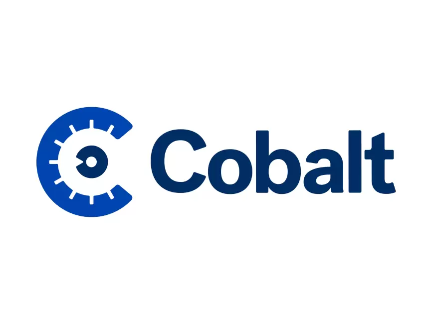

samyashajrawi@gmail.com
samyashajrawi@gmail.com
 +1(480) 740-4774
+1(480) 740-4774
Hi, I'm Samya Shajrawi

Principal / Staff Frontend Engineer | High-Impact Frontend Architect
I am a hands-on Frontend Architect with 18+ years of experience engineering high-scale React/TypeScript architectures, global enterprise platforms, and complex payment systems. Specialized in performance optimization, type-safe state management, and modern frontend infrastructure that drives massive business scale.
I’ve worked at companies like Team One, Cobalt Lab, Verizon Media, and Yahoo, where I led frontend architecture, built reusable UI systems, and partnered closely with product and design teams to deliver reliable, user-focused experiences using React, TypeScript, and modern frontend tooling.
In recent years, I’ve focused on data-heavy and AI-enabled products—designing interfaces that help users explore, trust, and act on complex information. I’m especially interested in how AI can enhance decision-making, personalization, and developer productivity while maintaining strong usability and performance.
I enjoy owning problems end-to-end, mentoring engineers, and raising frontend standards across teams. If you’re building thoughtful, impactful products at scale, I’d love to connect.
Skills
Frontend Architecture
React (18/19), TypeScript (Advanced/Type-Safe Design), JavaScript (ES6+), GraphQL, Micro-Frontends
State & Data Fetching
Redux/Redux Toolkit, Zustand, Apollo Client, REST APIs, TanStack Query
E-Commerce & Payments
Stripe, PayPal, Apple Pay, Google Pay, Adobe Commerce / Payment Services
Backend & Infrastructure
Node.js, PostgreSQL, AWS, OpenSearch, CI/CD Pipelines, Monorepo Tooling (Nx/Turbo)
Experiences
Team One / Publicis Groupe
October 2024 – December 2025
- Architected scalable React + TypeScript applications integrated into Adobe Experience Manager (AEM) to drive and manage 400+ distinct multi-tenant dealership websites from a single, unified codebase.
- Engineered robust checkout and payment systems by seamlessly pairing Adobe Commerce with providers like Stripe, PayPal, and Apple/Google Pay, optimizing transaction flows across storefronts.
Independent Frontend Consultant
October 2023 – September 2024
- Provided specialized frontend architectural consulting for clients, focusing on migrating legacy systems to type-safe React and TypeScript codebases.
- Audited client applications for performance bottlenecks, optimizing core web vitals, bundle sizes, and state management architecture.

Cobalt Lab
August 2021 - June 2023
- Architected and transitioned Cobalt’s frontend ecosystem to a monorepo strategy, successfully decoupling tight deployment dependencies and accelerating independent team release cycles.
- Designed and executed a centralized Redux state management architecture across the monorepo, eliminating 60% of redundant legacy boilerplate and resolving complex asynchronous race conditions.
Yahoo / Verizon Media
Nov 2009 - June 2019
- Served as a Mail Frontend Software Engineer, overseeing the implementation and management of Bidirectional Text (BiDi) for the new Yahoo Mail built on React.
- Contributed as a member of the Contacts Team, instrumental in developing a contacts tool integrated within the new Yahoo Mail platform.
- Collaborated with the Homepage and Verticals team to implement various advertisements on the Yahoo homepage, enhancing monetization efforts.
- Transitioned to the Mail Team, focusing on frontend performance and stability enhancements and modernizing the Contacts tool.
- Developed and maintained a robust feed aggregator system using PHP, aggregating data from 116 diverse feeds and serving them to proprietary platforms.
- Spearheaded front-end development for the Maktoob Sports football website and contributed to the development of the Yahoo Maktoob football app for Android platforms.
Maktoob
Oct 2006 - Nov 2009
- Developed and maintained a robust feed aggregator system using PHP, Worked on developing microsites and campaigns for prominent brands like Samsung, Pampers, and Motorola, utilizing a full-stack approach.
Projects
Hotel Booking Dashboard
- Built a responsive frontend dashboard for managing and visualizing hotel booking data. Focused on clean UI structure, reusable components, and clear data presentation.
- Demonstrates practical frontend patterns for dashboards, layouts, and state-driven UI updates.
- Code Used: TypeScript, JavaScript, frontend architecture (src/), automated tests
- Skills: Dashboard UI, state-driven rendering, component structure, testing workflows, clean Node.js project structure
- Repository
Chatbot for Your Data
- Created a chatbot for your own pdf file using Flask, a popular web framework, and LangChain, another popular framework for working with large language models (LLMs). The chatbot will not just interact with users through text but also comprehend and answer questions related to the content of a specific document.
- Repository
Babel Fish with LLM STT TTS
- Created a voice translation assistant using Watsonx and IBM Watson Speech Libraries for Embed. The guided project takes you through building a translation assistant that can take voice input, convert it to text using speech-to-text technology, send the text to Watsonx's flan-ul2 model, receive a response in other languages, convert it to speech using text-to-speech technology and finally play it back to the user. The voice translator will have a responsive frontend using HTML, CSS, and JavaScript, and a reliable backend using Flask.
- Repository
AI Career Coach
-
Created a simple yet powerful sample application. As you dive deeper, you will unlock the potential of watsonx.ai's large language model, learning how to harness its power for real-world applications. Developed three specialized tools: an AI-driven resume enhancer, a personalized cover letter generator, and a strategic job hunting advisor.
Each module is carefully designed to not only teach you the technical know-how but also to provide insights into the ever-evolving job market, making you well-equipped to cater to the needs of modern job seekers. "AI Career Coach" is more than just a learning experience; it's a stepping stone to a future where AI bridges the gap between talent and opportunity.
- Repository